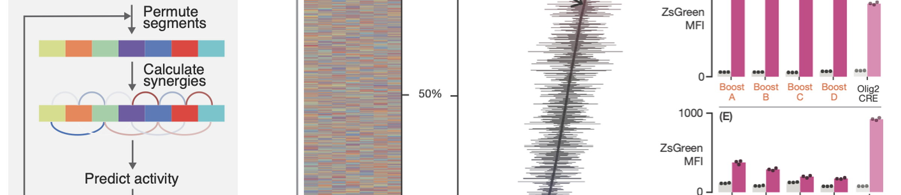
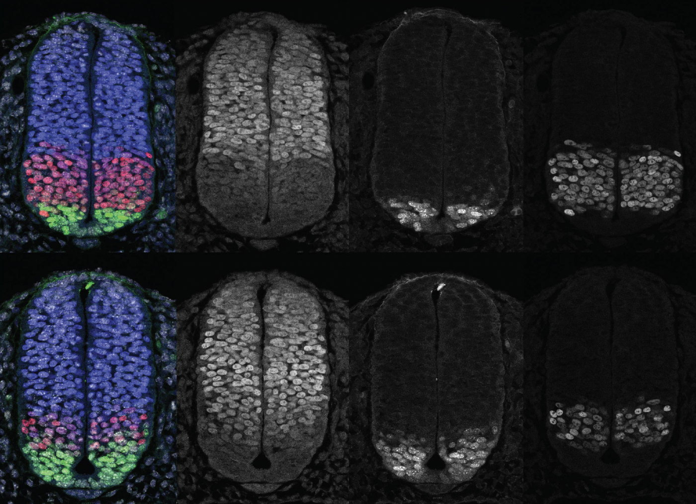
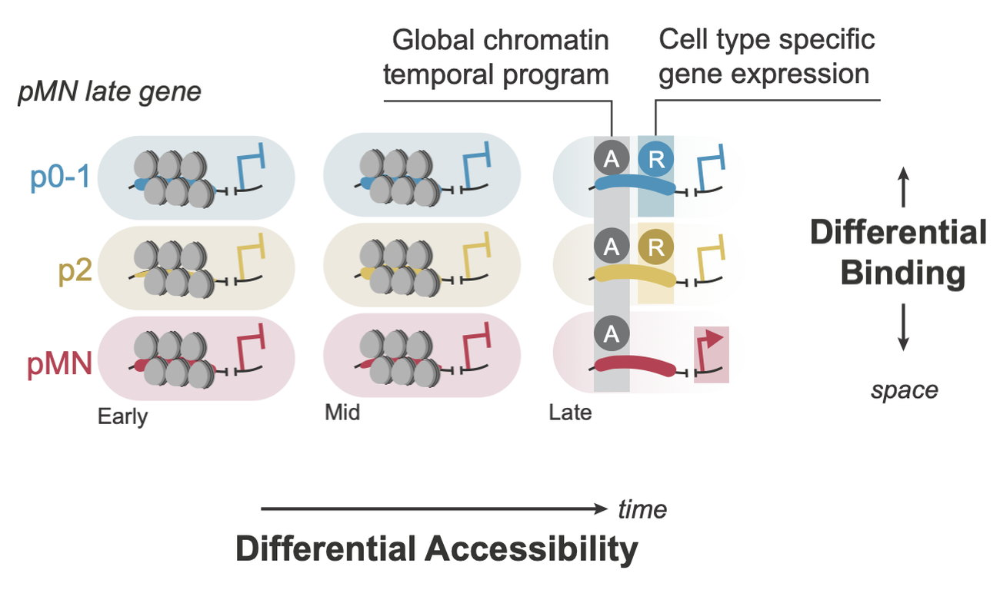
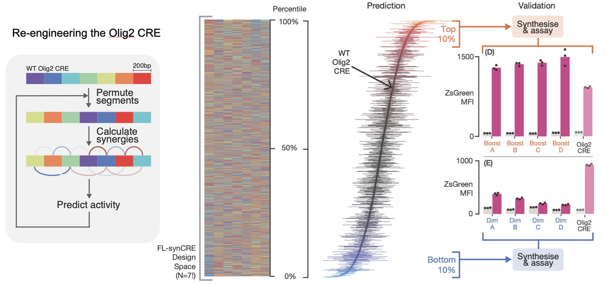

Research
Gene regulation
Cis-regulatory elements are the stretches of DNA that determine when and where genes switch on and off. We are working out the rules they follow and testing those rules by building new elements from scratch.
Cell identity comes down to which genes are on and that is set by cis-regulatory elements: stretches of DNA that integrate signals and transcription factors to control when and where a gene is expressed. They are molecular devices at the centre of every decision a developing cell makes, yet how they work inside a gene regulatory network remains poorly understood. We use genomics and computational methods to find the sites bound by specific transcription factors, then test them with transgenic reporters and gene editing. Analysing these alongside transcriptomic data lets us reconstruct the regulatory logic of the system.

The neural tube generates a large diversity of neurons and glia from a small pool of progenitors, and it does so along two axes, spatial and temporal, that work by different mechanisms. In space, progenitors at different positions share a common set of regulatory elements and differ in which inputs they integrate, a mechanism we call differential binding. In time, a global programme operating in progenitors throughout the nervous system controls which elements are accessible as development proceeds. Perturbing it changes the order in which progenitors switch fate and alters the identity of the cells they produce. The two run in parallel rather than one through the other, so the temporal programme makes elements available when spatial determinants need them. We call this chronotopic integration: a global chromatin programme in time sets what the spatial network can do and together they allocate cell identity in the right order.

The test of understanding cis-regulatory elements is whether we can build one. We developed a screen that assembles synthetic elements from fragments of natural ones and measures thousands at a time in differentiating stem cells. The rules it produced let us take the Olig2 element apart, permute its segments and predict which arrangements would be stronger or weaker than the original. Synthesising selected elements confirmed both directions and elements designed this way shift the pattern of motor neuron production in neural tissue.

Precision does not come from individual elements alone. The design of the network matters too. Different levels of transcription factor expression produce distinct gene expression programmes, and the spatial variability introduced by stochastic gene expression can be buffered by the dynamics that the network structure generates. We call this precision by design: some networks are arranged so that the noise inherent in gene expression does not blur the pattern. How regulatory elements behave in context remains largely unknown, and that gap is where most of our current work sits.
Publications
Cornwall-Scoones J, Benzinger D, Yu T, et al., Briscoe J, Delás MJ
Predictable engineering of signal-dependent cis-regulatory elements
bioRxiv (2025)
Zhang I, Boezio GLM, Cornwall-Scoones J, et al., Briscoe J, Delás MJ
The cis-regulatory logic integrating spatial and temporal patterning in the vertebrate neural tube
Developmental Cell 60:3034-3049 (2025)
Delás MJ, Kalaitzis CM, Fawzi T, et al., Briscoe J
Developmental cell fate choice in neural tube progenitors employs two distinct cis-regulatory strategies
Developmental Cell 58:3-17 (2023)
Exelby K, Herrera-Delgado E, Perez LG, Perez-Carrasco R, Sagner A, Metzis V, Sollich P, Briscoe J
Precision of tissue patterning is controlled by dynamical properties of gene regulatory networks
Development 148:dev197566 (2021)
Other research areas

Tempo, growth and lineage
Read more →
Stem cells and bioengineering
Read more →